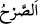
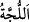
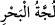
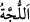
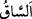
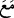
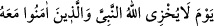
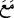
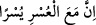
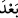

44. Ona: “Köşke gir!” dendi. Melike onu görünce derin bir su sandı ve eteğini
yukarı çekti. Süleyman: “Bu, billurdan yapılmış, şeffaf bir zemindir.” dedi. Melike
dedi ki: “Rabbim! Ben gerçekten kendime yazık etmişim. Süleyman’la beraber
âlemlerin Rabbi olan Allah’a teslim oldum.”
Belkıs köşkün kapısına varınca “Ona: “Köşke gir!” dendi.” “__WORD__ kasr, köşk
demektir. Ayıp ve kusurdan uzak, yâni hâlis ve temiz her yüksek binaya “__WORD__ denir.
“Melike onu görünce” köşkü görünce, güneş üzerine vurmuş ve su saf ve berrak bir
şekilde görünüyordu, balıkları da gördü “derin bir su sandı”
“__WORD__ büyük/derin su demektir. el-Müfredât’ta: “__WORD__ denizin dalgalarının gidip
gelmesidir, der. Keşfü’l-esrâr’da ise şöyle der: “__WORD__ suyun sığ olan yeridir.” el-
Kâmûs’ta belirtildiği üzere bu, az sudur veya topukların ve bacakların yarısına kadar
ulaşan sudur ya da boğulmayacak kadar olan sudur.
Yani Belkıs, Süleyman (a.s.)’ın tahtının önünde derin bir su olduğunu zannetti. Suyun
derin olduğunu sandı; suyun aynanın altında olduğunu anlamadı ve suya girmek istedi.
“Ve eteğini yukarı çekti.” “__WORD__ topukla diz kapağı arasına denir. Yani, eteklerinin
ıslanmaması için onları topladı. Bir de ne görsünler tüylerinin fazla olması dışında o,
bacak ve ayak bakımından insanların en güzeli.
“Süleyman:” ona bacaklarını açma. “Bu,” su zannettiğin “billurdan yapılmış, şeffaf”
pürüzsüz ve düz, aynanın ve kılıcın yüzü gibi sürekli parlayan “bir zemindir,” su
değildir “dedi.”
“Melike dedi ki: “Rabbim! Ben” güneşe tapmakla “gerçekten kendime yazık
etmişim. Süleyman’la beraber âlemlerin Rabbi olan Allah’a teslim oldum.”
Burada Allah Teâlâ’nın ülûhiyyetini ve kulluk etmeye lâyık olmakta tek olduğunu ve
Belkıs’ın daha önce taptığı güneş de dâhil olmak üzere bütün varlıkların Rabbi
olduğunu ortaya koymak için ism-i celîle (Allah ismine) yönelme ve onu rubûbiyet ile
vasfetme söz konusudur. ‘Ben, Süleyman (a.s.)’a tâbi olup ona uyarak samimiyetle
O’nun birliğini kabul ettim’ demektir.
Kayserî der ki: “Süleyman (a.s.)’ın İslâm’ı gibi müslüman oldum. Yani, o müslüman
olduğu gibi ben de müslüman oldum. Buradaki “__WORD__”, “
Allah’ın, Peygamberi ve O’nunla birlikte îman edenleri utandırmayacağı
günde…)” (et-Tahrîm, 66/8) âyetindeki “__WORD__” gibidir. Çünkü şüphe yok ki mü’minlerin
îman zamanı ile peygamberlerin îman zamanı aynı değildi. Kezâ Belkıs’ın müslüman
oluşu da, Süleyman (a.s.)’ın müslüman olduğu zamanda değildi. Burada kasdedilen;
Süleyman (a.s.) Allah’a îman ettiği gibi ben de Allah’a îman ettim. O’nun müslüman
olduğu gibi ben de müslüman oldum, demektir.”
Burada “__WORD__”nın “
Gerçekten, zorlukla beraber bir kolaylık daha
vardır.” (el-İnşirah, 94/6) âyetinde olduğu gibi “__WORD__ (sonra)” yerinde olması da